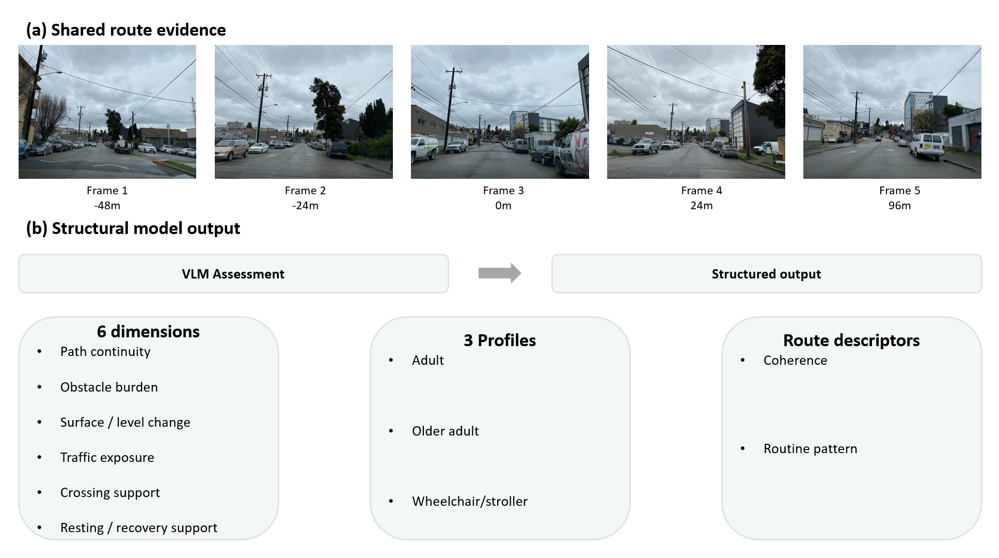

Research
My research examines how people perceive, navigate, and interact with built environments, and how computational systems represent these relationships. Building on a background in landscape architecture and environmental behaviour research, I now investigate human-centred spatial AI, with particular interests in accessibility, multimodal perception, and the consequences of automated spatial decisions.
Current Research
Human-centred spatial AI, accessibility, and multimodal reasoning.

AFTERMATH
When a robot completes its task, what happens to the people who use the space afterward?
A controlled spatial-planning study examining how task-successful robotic rearrangements can produce unequal accessibility outcomes.

Street-view imagery
Multi-frame context
Mobility profiles
HumanRoute
Can vision-language models assess a pedestrian route from the perspective of people with different mobility needs?
HumanRoute investigates how visual context and user profiles shape model-generated assessments of urban walking environments.